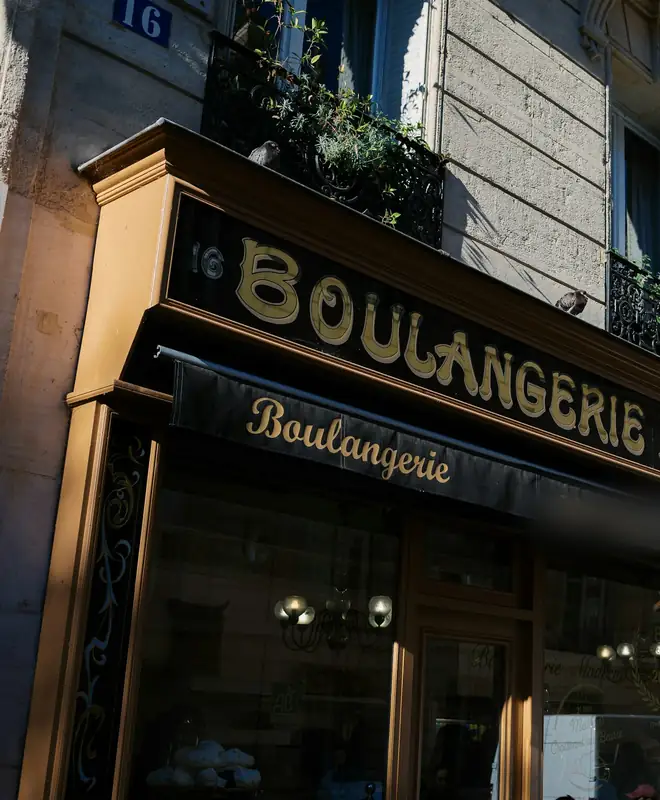
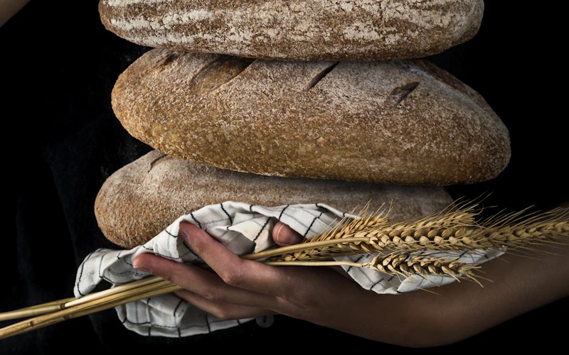
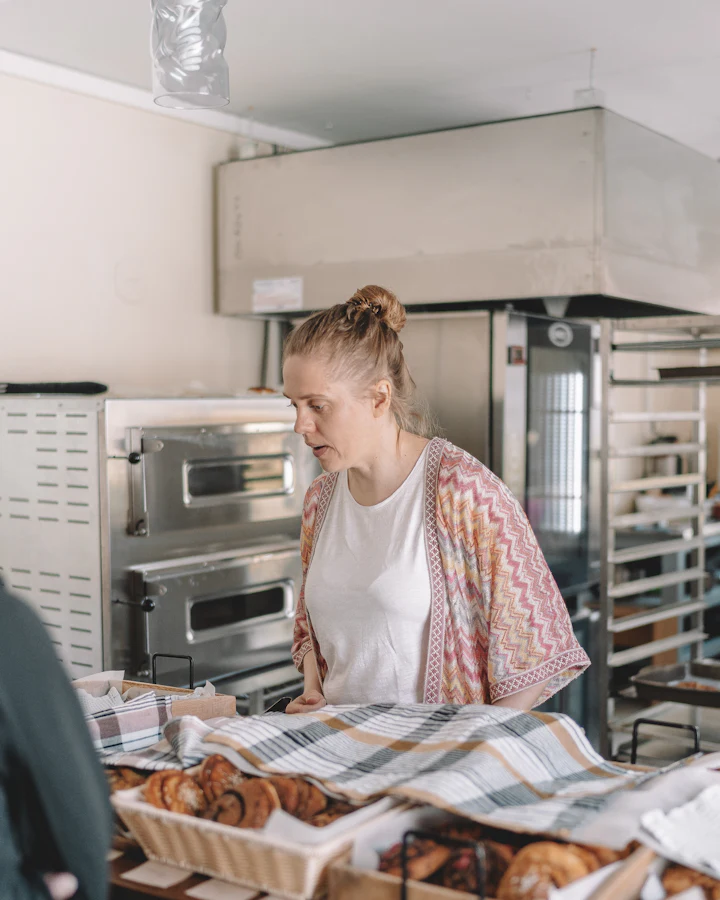

Boulangerie Pâtisserie
Maison Vasseur
Montreuil-sur-Mer · depuis 1987
Le pain sort du four trois fois par jour. Venez à la bonne heure.
Les fournées
Le pain le plus croustillant, c'est celui qui sort du four. Voici quand.

- 6 h 45 Baguettes, pains de campagne, croissants et pains au chocolat
- 11 h 30 Baguettes tradition et ficelles, pour le déjeuner
- 17 h 00 Tradition et pain du soir, à la sortie de l'école
Le dimanche, deux fournées seulement : 7 h et 10 h.
Sur l'ardoise
Le choix change avec les saisons. Ce qui manque le matin revient souvent à la fournée suivante.
Pains
- Baguette1,15 €
- Baguette tradition1,30 €
- Ficelle0,90 €
- Campagne au levain3,60 €
- Tourte de seigle4,20 €
- Pain complet3,20 €
- Pain aux céréales3,80 €
- Pain aux noix4,50 €
- Pain de mie maison3,50 €
Viennoiseries
- Croissant pur beurre1,25 €
- Pain au chocolat1,35 €
- Pain aux raisins1,60 €
- Chausson aux pommes1,80 €
- Croissant aux amandes2,20 €
- Brioche au sucre1,40 €
- Pain au lait0,70 €
- Cramique aux raisins6,50 €
Pâtisseries
- Éclair choco ou café3,20 €
- Religieuse3,50 €
- Paris-Brest4,20 €
- Mille-feuille3,60 €
- Tarte citron meringuée3,50 €
- Tartelette aux pommes3,00 €
- Merveilleux3,40 €
- Part de flan2,80 €
- Gaufre à la vergeoise1,90 €
Le midi
- Jambon-beurre4,50 €
- Poulet, crudités5,20 €
- Chèvre, miel, noix5,40 €
- Quiche lorraine4,20 €
- Croque-monsieur4,00 €
- Flamiche au maroilles4,80 €
Formule : sandwich, boisson et pâtisserie au choix 8,90 €
La spécialité
Tarte au sucre 6 parts · 9,50 €
Cassonade, beurre, crème. La recette de la grand-mère, pas touchée depuis.

La maison
Thomas et Claire Vasseur ont repris le fournil familial en 2014. Les pâtes sont pétries la veille et poussent lentement toute la nuit ; le pain cuit sur la sole du four, comme avant.
- 18 hde pousse pour le campagne
- 62la farine vient d'un moulin du département
- 0pâte surgelée, même pour les viennoiseries
Un gâteau pour dimanche ?
Anniversaires, communions, pièces montées : commandez 48 h à l'avance, par téléphone ou en boutique.
Appeler pour commanderHoraires & accès
| Lundi | 6 h 45 – 19 h 30 |
|---|---|
| Mardi | 6 h 45 – 19 h 30 |
| Mercredi | Fermé |
| Jeudi | 6 h 45 – 19 h 30 |
| Vendredi | 6 h 45 – 19 h 30 |
| Samedi | 6 h 45 – 19 h 00 |
| Dimanche | 7 h 00 – 12 h 30 |
Fermeture annuelle : deux semaines fin août.
62170 Montreuil-sur-Mer